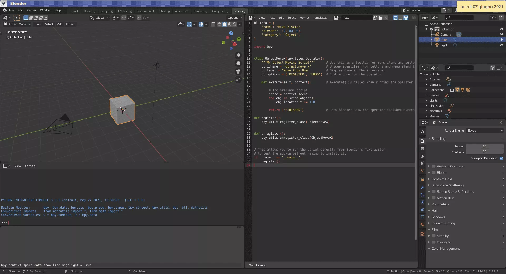

Calcolo numerico per la generazione di immagini fotorealistiche
Maurizio Tomasi maurizio.tomasi@unimi.it
In the last lesson, we saw how to implement a lexical analysis of a source file that defines a 3D scene.
The lexer we implemented reads a sequence of characters from a stream (a file) and produces a sequence of tokens as output.
Today’s task is to interpret the sequence of tokens (syntactic
analysis) and from this build a series of objects of type
Shape, Material, etc. in memory (semantic
analysis).
The syntax of a language can be divided into categories depending on the peculiarities of its syntax and how the tokens are concatenated: LL(n), LR(n), GLR(n), LALR(n), etc.
Each of these families requires specific algorithms for parsing, and unfortunately, algorithms that work well for one family do not necessarily work well for others!
Our language is of type LL(1), like Pascal and Rust but unlike C++, and the algorithm for analyzing LL grammars is among the simplest.
Let’s consider this definition:
The definition includes these elements:
diffuse);image and uniform);<0.7, 0.5, 1>.However, it is simple to write a function that analyzes the
definition of sky_material if it can rely on other
functions, each of which analyzes only one element.
Therefore, we define a function parse_color that
interprets a sequence of tokens as a color and returns the corresponding
Color object, a function parse_pigment, a
function parse_brdf, etc.
These functions will have the task of calling each other, one
inside the other, so that higher-level functions like
parse_material can rely on progressively simpler ones like
parse_color.
parse_colordef expect_symbol(stream: InputStream, symbol: str) -> None:
"""Read a token from `stream` and check that it matches `symbol`."""
token = stream.read_token()
if not isinstance(token, SymbolToken) or token.symbol != symbol:
raise parser_error(token, f"got '{token}' instead of '{symbol}'")
# Don't bother returning the character: we were already expecting it
def expect_number(stream: InputStream) -> float:
"""Read a token from `stream` and check that it is either a literal number or a variable.
Return the number as a ``float``."""
token = input_file.read_token()
if isinstance(token, LiteralNumberToken):
return token.value
elif isinstance(token, IdentifierToken):
variable_name = token.identifier
if variable_name not in scene.float_variables:
raise GrammarError(token.location, f"unknown variable '{token}'")
return scene.float_variables[variable_name]
raise GrammarError(token.location, f"got '{token}' instead of a number")
# This parses a list of tokens like "<0.7, 0.5, 1>". Note that functions
# with name "expect_*" only read *one* token, while functions named
# "parse_*" read more than one token.
def parse_color(stream: InputStream) -> Color:
expect_symbol(stream, "<")
red = expect_number(stream)
expect_symbol(stream, ",")
green = expect_number(stream)
expect_symbol(stream, ",")
blue = expect_number(stream)
expect_symbol(stream, ">")
# Create the "Color" object *immediately* (not something a real-world
# compiler will do, but our case is simpler than a real compiler)
return Color(red, green, blue)parse_pigmentdef parse_pigment(stream: InputStream) -> Pigment:
# Examples: uniform(<0.7, 0.5, 1>)
# checkered(<0.3, 0.5, 0.1>, <0.1, 0.2, 0.5>, 4)
# image("bitmap.pfm")
keyword = expect_keywords(stream, [
KeywordEnum.UNIFORM,
KeywordEnum.CHECKERED,
KeywordEnum.IMAGE,
])
expect_symbol(stream, "(")
if keyword == KeywordEnum.UNIFORM:
color = parse_color(stream)
result = UniformPigment(color=color)
elif keyword == KeywordEnum.CHECKERED:
color1 = parse_color(stream)
expect_symbol(stream, ",")
color2 = parse_color(stream)
expect_symbol(stream, ",")
num_of_steps = int(expect_number(stream))
result = CheckeredPigment(color1=color1, color2=color2, num_of_steps=num_of_steps)
elif …: # Other pigments
…
expect_symbol(stream, ")")
return resultA full-blown compiler like GCC would use the result of semantic analysis to build an Abstract Syntax Tree (AST).
The AST would be passed to the optimizer and then to the code generator, whose purpose is to output machine code.
Question: if you declare a variable like
do you think GCC needs to allocate this memory during the compilation? If so, at which stage? (Lexing, parsing, AST optimization, machine code emission, …)
Our “compiler” is very simple, and as soon as the syntactic
analysis understands that a variable/material/shape/observer is being
defined, it immediately creates a corresponding object
in memory (e.g., Color).
In some sense, our compiler is an interpreter, because it “executes” the code as soon as it is processed by the parser.
This is a huge simplification for us! Even traditional “interpreters” like Python and Julia have a compilation stage which precedes the execution stage.
In an LL(n) grammar, tokens are analyzed “from left to right,” that is, in the order in which they are produced by the lexer.
The number n in the notation
LL(n) indicates that n
look-ahead tokens are needed to correctly interpret the syntax:
that is, the n subsequent tokens are
examined to interpret the current token (similar to how
unread_char works in our lexer).
Consequently, our format for describing scenes is of type LL(1) because:
Let’s now explain in which contexts it is necessary to use look-ahead.
Consider this definition:
float clock(150)In this case, look-ahead is not necessary:
float, which indicates
that a variable is being defined;(, a numeric
literal, and the symbol ).float# Read the first token of the next statement. Only a handful of
# keywords are allowed at the beginning of a statement.
what = expect_keywords(stream, [KeywordEnum.FLOAT, …])
if what == KeywordEnum.FLOAT:
# We are going to declare a new "float" variable
# Read the name of the variable
variable_name = expect_identifier(stream)
# Now we must get a "("
expect_symbol(stream, "(")
# Read the literal number to associate with the variable
variable_value = expect_number(stream, scene)
# Check that the statement ends with ")"
expect_symbol(stream, ")")
# Done! Add the variable to the list
variable_table[variable_name] = variable_value
elif …: # Statements other than "float …" can be interpreted here
…Let’s consider these definitions:
We must write a function parse_plane that calls a
function parse_transformation.
But the transformation is problematic: after …100])
we cannot tell if the definition is complete or if the *
symbol (composition) follows. In the latter case,
parse_transformation would still have work to do!
# Start from the identity matrix
result = Transformation()
while True:
# For simplicity, let's consider just two kinds of transformations
transformation_kw = expect_keywords(stream, [
KeywordEnum.TRANSLATION,
KeywordEnum.ROTATION_Y,
])
if transformation_kw == KeywordEnum.TRANSLATION:
expect_symbol(stream, "(")
result *= translation(parse_vector(stream, scene))
expect_symbol(stream, ")")
elif transformation_kw == KeywordEnum.ROTATION_Y:
expect_symbol(stream, "(")
result *= rotation_y(expect_number(stream, scene))
expect_symbol(stream, ")")
# Peek the next token
next_kw = stream.read_token()
if (not isinstance(next_kw, SymbolToken)) or (next_kw.symbol != "*"):
# Pretend you never read this token and put it back!
# This requires to alter the definition of `InputStream`
# so that it holds the unread tokens as well as unread characters
stream.unread_token(next_kw)
breakBy “grammar” we mean the set of lexical, syntactic, and semantic rules of a language.
From the point of view of syntactic analysis, it should be evident that a parser needs to know at every moment what is the list of tokens admissible at the point where it has arrived in interpreting the source code.
In compiler theory, some notations have been invented to describe the grammar of languages, which are very useful when implementing a lexer or a parser.
The notation we will see is called Extended Backus-Naur Form (EBNF), and is the result of the work of many people, including Niklaus Wirth (the creator of the Pascal language).
We will not provide a full description of EBNF and will just present it in simple terms. It is useful to understand it because often the documentation of programming languages contains their grammar (for example Nim, C# and Kotlin; for Rust they are working on it, while the D manual uses a different syntax).
The next slide shows the entire syntactic structure of our grammar in EBNF format.
scene ::= declaration*
declaration ::= float_decl | plane_decl | sphere_decl | material_decl | camera_decl
float_decl ::= "float" IDENTIFIER "(" number ")"
plane_decl ::= "plane" "(" IDENTIFIER "," transformation ")"
sphere_decl ::= "sphere" "(" IDENTIFIER "," transformation ")"
material_decl ::= "material" IDENTIFIER "(" brdf "," pigment ")"
camera_decl ::= "camera" "(" camera_type "," transformation "," number "," number ")"
camera_type ::= "perspective" | "orthogonal"
brdf ::= diffuse_brdf | specular_brdf
diffuse_brdf ::= "diffuse" "(" pigment ")"
specular_brdf ::= "specular" "(" pigment ")"
pigment ::= uniform_pigment | checkered_pigment | image_pigment
uniform_pigment ::= "uniform" "(" color ")"
checkered_pigment ::= "checkered" "(" color "," color "," number ")"
image_pigment ::= "image" "(" LITERAL_STRING ")"
color ::= "<" number "," number "," number ">"
transformation ::= basic_transformation | basic_transformation "*" transformation
basic_transformation ::= "identity"
| "translation" "(" vector ")"
| "rotation_x" "(" number ")"
| "rotation_y" "(" number ")"
| "rotation_z" "(" number ")"
| "scaling" "(" vector ")"
number ::= LITERAL_NUMBER | IDENTIFIER
vector ::= "[" number "," number "," number "]"The symbol ::= defines a grammar element, for
example:
number ::= LITERAL_NUMBER | IDENTIFIERThe symbol | represents a series of alternatives
(logical or).
The symbol * denotes zero or more repetitions
(+ indicates one or more):
scene ::= declaration*UPPERCASE indicates tokens produced by the lexer,
lowercase identifies other elements in the EBNF
grammar.
Recursive definitions are possible:
transformation ::= basic_transformation | basic_transformation "*" transformationOur code raises an exception whenever an error is detected in the source code.
It is able to report the row and column of the token where the error was found, which is very useful!
But this execution model requires that compilation terminates at
the first error! Modern compilers like g++ and
clang++ instead continue compilation, looking for
subsequent errors.
To avoid stopping at the first error, we need to look for a termination token, i.e., a token that is used to terminate a command: once found, we continue from the next token.
In the C++ language, two frequently used termination
tokens are ; (used to terminate a statement)
and } (used to terminate a block of code). For example:
In a language like ours, it is not easy to identify a
termination token; the best thing would be to require the
presence of ; at the end of each statement, as in
C++, or to require definitions to be terminated by a newline character
(encoded as a TOKEN_NEWLINE token).
Producing lists of errors instead of just one error at a time is especially important in cases where the compiler is very slow to execute. This is the case with C++ and Rust.
Our language will be very easy to interpret (it does not have complex semantics, and does not require the creation of an AST or the application of an optimizer): it is therefore not worth worrying about implementing this functionality.
However, let’s take this opportunity to understand why there can be large differences in the compilation speed of languages!
The great complexity of C++ is mainly related to
templates and the use of header files; let’s
understand this difficulty by looking at some simple examples.
Consider this definition, which shows the difficulty of
interpreting >>:
It is impossible to create the correct token sequence with the approach we have followed, which rigidly separates lexing from parsing (and in fact the first line was not allowed by the C++ standard until a few years ago).
template DifficultiesC++ templates also make syntactic analysis complex:
These are practically two structures with the same name
(MyStruct). This can be used for example in the following
code:
But at the syntax level, the > term makes everything
complicated!
I’ve become somewhat infamous about wanting to keep the language [Rust] LL(1) but the fact is that today one can’t parse Rust very easily, much less pretty-print (thus auto-format) it, and this is an actual (and fairly frequent) source of problems. It’s easier to work with than C++, but that’s fairly faint praise. I lost almost every argument about this, from the angle brackets for type parameters [emphasis added] to the pattern-binding ambiguity to the semicolon and brace rules to … ugh I don’t even want to get into it. The grammar is not what I wanted. Sorry.
Graydon Hoare, creatore del linguaggio Rust.
When templates were introduced in C++, it was a terrible
choice
to use < and > as symbols because (1)
they were already used as comparison operators, and (2) the operators
<< and >> already
existed.
C# suffers from the same problem, but it is less severe (in C# templates are called generics):
>> should
be interpreted as two tokens or one, the rule is that if the next token
is (, ), ], :,
;, ,, ., ?,
==, or !=, then it should be interpreted as
two tokens, otherwise one;<> you can only specify types, not
expressions like a > b.Pascal, Nim, and Kotlin use shl and shr
for these operators.
The D language instead uses a different syntax for templates, and in the previous example would write
This syntax is much easier to parse!
Rust uses <> like C++, but to remove the
ambiguity it requires writing ::< in expressions:
In C/C++, variable declarations are complicated because the identifier containing the variable name is placed in the middle of the type:
which declares an array of 100 variables of type
int.
The tokens that define the type are int,
[, 100, and ], and are located
both to the left and right of the variable name: this
is complicated for the programmer! (Try to interpret the more
complicated case yourself!)
The Go language uses a simpler notation:
The var keyword signals to the parser that a
variable is being declared.
The tokens that define the type are reported all together, after the identifier representing the variable name.
The notation [100]int follows the natural order of
words: “an array of 100 int values”, and is easier for the
programmer to read (in C you have to read backwards, from right to
left).
Go was inspired by Pascal, where variables are listed within a
var clause. The variable name comes first and is clearly
separated from the type:
This syntax is very easy to interpret: Pascal is in fact designed to be simple and at the same time fast to compile.
Similar ideas are used in the Modula, Oberon, Ada, Nim, and Kotlin languages.
Writing tests for a compiler is a very complex matter, because the number of possible errors is practically infinite!
It is not possible to have completely exhaustive tests; you need to be creative and be prepared to add many new tests once users start using your program. (In pytracer I have implemented just the bare minimum, you are encouraged to write more tests!)
If you are curious, in the clang/test/Lexer
directory there are the source files used for the tests of only the
Clang lexer!
There are tools to automatically generate lexers and parsers. These tools require a grammar as input (usually in EBNF form), and produce source code that interprets the grammar.
Two historically important tools are lex and
yacc, which are available today in the open-source versions
Flex
and Bison (they
generate C/C++ code).
Lemon generates C code and was used to write the SQL parser used in SQLite.
ANTLR (C++, C#, Java, Python) is the most complete and modern solution.
Keep in mind, however, that most people prefer to write lexers and parsers by hand…
Wirth’s book Compiler Construction (Addison-Wesley, 1996) is remarkably clear: in a few pages it shows how to implement a compiler for the Oberon language (a language created by Wirth as a successor to Pascal).
The “sacred” text that illustrates compiler theory is the so-called dragon book by Aho, Sethi, Lam & Ullman: Compilers – Principles, Techniques and Tools (Pearson Publishing, 2006).
Today, compilers are considerably more complex due to the necessary integration with development environments (PyCharm, CLion, IntelliJ IDEA, etc.). Watch the video Anders Hejlsberg on Modern Compiler Construction: you will appreciate much more what your IDEs do!
We’ve reached the end of the course!
Once you’ve implemented the parser, you can release version
1.0 of your program, sell it to Disney Studios, make a ton
of money, and live in luxury for the rest of your life!
If, however, you intend to continue working as a «physicist», before concluding, it’s good to review what we’ve learned in this course and how it can be useful to you in the future, even if it doesn’t involve rendering 3D scenes…
Write code little by little, verifying each new feature with tests: don’t write an entire program from top to bottom without ever testing or compiling it!
Automate tests using CI builds.
Use version control systems to track changes.
Be organized in the use of issues, pull
requests, CHANGELOG files, etc.
Decide from the start which license to use to release your code.
Document your work (README, docstrings…).
Learn to use a proper IDE!
In the specific case of simulation codes, choose your random number generator carefully!
It’s important that the user of your code can specify the seed and, if the generator allows it, the sequence identifier: this allows for the repeatability of simulations, which helps a lot during debugging.
If you have to run many simulations, use the ability of modern computers to perform calculations in parallel. In the simplest cases, it’s enough to use GNU Parallel.
It’s very likely that the users of the programs you develop will try to use them in contexts you hadn’t foreseen.
Therefore, it’s important that your program has a certain degree of versatility.
(However, don’t overdo it: the more versatile a program is, the more complex it is to write, and therefore you risk never releasing version 1.0!)
In our project, we implemented the ability to read the scene from
a file. This is much more versatile than the simple demo
command!
Similarly, some of you have made it so that your program saves images in multiple formats: not just PFM, but also PNG, JPEG, etc.
In general, it’s good to rely on widespread formats (PNG, JPEG) rather than obscure formats (PFM) or even ones you invent yourself! This last option is viable only if there are no suitable formats (as is the case with the scene description language we invented).
The versatility of a program’s input/output can be achieved in various ways:
Let’s examine these possibilities one by one.
Consider a program that simulates a physical phenomenon and prints results to the screen:
$ ./myprogram
Calculating…
Estimated temperature of the air: 296 K
The speed of the particle is 8.156 m/s²
Force: 156.0 N
$The program’s output is not easily usable: numbers are difficult to extract from the text. A better choice would be to use the CSV format, which can be imported in spreadsheets like Excel or Sc-im:
$ ./myprogram
"Temperature [K]",296
"Speed [m/s²]",8.156
"Force [N]",156.0The advantage of existing formats is that they can be read by programs other than your own. This is especially convenient when you need to share data with others.
If you only need to store numerical tables, the best solutions are probably CSV files (text-based) or Excel files (binary). The Python library Pandas supports both.
More compact formats suitable for tabular and matrix data include FITS (old but well-supported) and HDF5 (newer and more efficient, though less widely supported).
CSV and Excel are good for storing numbers organized in tables, but often, you need to apply complex filters and calculations to this data.
A great format for this purpose is sqlite3: unlike CSV and Excel, it offers excellent functions for searching and computing data and is optimized for large data volumes (up to terabytes).
When your data are more structured than plain tables, consider JSON, YAML (which you have already used for GitHub Actions), or XML: these can store complex data types as lists and dictionaries.
XML is the most complex, but it implements a validation system (called XML schema) which makes it much more robust than JSON or YAML.
In this example, a Python program saves the value of a complex variable in a JSON file, which is then read back by a Julia program:
Many tools are available for JSON; see, for example, jq.
In our program, we could have used the JSON format:
No need to write a compiler, but our program must still validate
the content (e.g., checking that camera contains a
projection is still our duty!).
This is the approach we adopted to describe 3D scenes in our program.
It is a highly creative activity but has some potential issues:
It may take a lot of time for the developer…
…and requires users to learn the syntax and semantics of your language.
We adopted this approach in class for its educational value (understanding compilers, error handling, etc.) and because using a generic format like JSON in this specific context would have been not necessarily easier.
A solution often used in large and complex programs is to embed an interpreter of a “simple” language into the program (this type of interpreter is called embedded).
Notable examples:
See Programmable Applications: Interpreter Meets Interface (Eisenberg, 1995).

In Blender, you can open a Python terminal to run commands for creating and modifying objects.
The language embedded in the application is “extended” with
functions specific to manipulating the objects managed by the
application. For example, this VBA code modifies cell A1 in
an Excel sheet:
Useful for automating repetitive tasks (e.g., animating an object in Blender following an accurate physical model).
Some languages (GNU Guile, Lua…) are primarily designed for embedded use.
This C program initializes the Python interpreter and executes a simple script. In reality, this script could have been provided by the user in the GUI of the program:
#define PY_SSIZE_T_CLEAN
#include <Python.h>
int
main(int argc, char *argv[])
{
wchar_t *program = Py_DecodeLocale(argv[0], NULL);
if (program == NULL) {
fprintf(stderr, "Fatal error: cannot decode argv[0]\n");
exit(1);
}
Py_SetProgramName(program); /* optional but recommended */
Py_Initialize();
/* Run a simple Python program that prints the current date */
PyRun_SimpleString("from time import time,ctime\n"
"print('Today is', ctime(time()))\n");
if (Py_FinalizeEx() < 0) {
exit(120);
}
PyMem_RawFree(program);
return 0;
}A similar approach to embedded interpreters is making your code callable from an external language (usually Python).
The difference from the previous solution is that in this case, you use the system-installed Python interpreter, not a dedicated one.
The advantage is that you can combine your library with existing ones: this makes it much more versatile and is generally the preferred approach.
This solution is easily achievable with languages like C++, Nim, Rust…; it is considerably more complex for Julia, C#, or Kotlin.